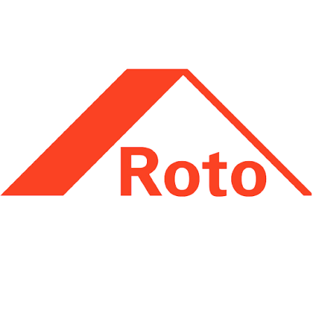
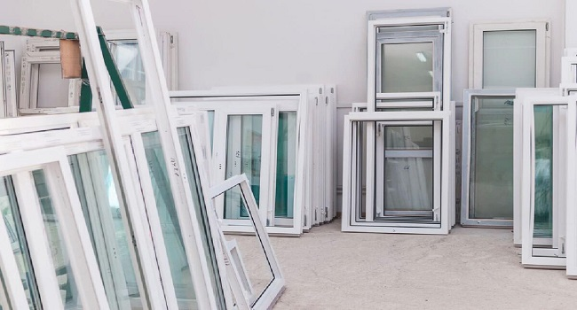
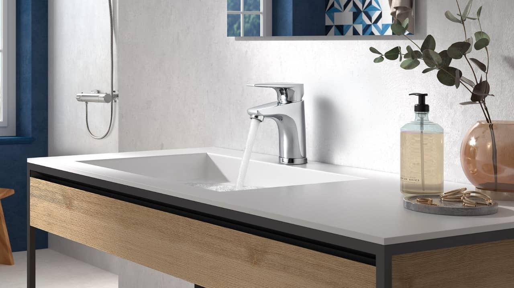

Reformas integrales, cocinas y baños con oficio propio en Alcoy
Reformas Bañuls (@proyectos.banuls) es la empresa familiar de referencia en Carrer Murillo 41 (03802 Alcoi). Especialistas en reformas completas de viviendas llave en mano, reformas de baños con mamparas de diseño propio a medida y cocinas contemporáneas. Coordinación integral de gremios, materiales certificados (Cortizo, Roto, Strugal) y presupuesto cerrado sin sorpresas.
Hacemos realidad tu casa soñada sin estrés ni desvíos de presupuesto. Un único interlocutor responsable de principio a fin, cuidando cada remate con la experiencia de tres generaciones.


Tecnología de Herrajes de Alta PrecisiónClientes Reales: Transformaciones Antes y Después en Alcoy
Obras reales ejecutadas por nuestro equipo en viviendas de Alcoy y comarca. Selecciona un proyecto y arrastra el control interactivo para ver la transformación:

ANTES
DESPUÉS · BAÑULS
👆 Arrastra la barra central o haz clic sobre la imagen para ver el cambio completo.
Transformación Integral de Baño con Mampara a Medida
Sustitución de bañera antigua por plato de ducha mineral antideslizante, grifería empotrada monomando, revestimiento porcelánico rectificado y fabricación de mampara de vidrio templado antical a medida exacta en nuestro taller.
“Un cambio total. La mampara ajusta al milímetro y no se escapa una gota de agua. Limpios, puntuales y serios.”
📸 Puedes ver más transformaciones en directo en nuestro Instagram: @proyectos.banuls
Vídeo Tours de Nuestras Reformas en Alcoy
Vea con sus propios ojos la calidad de los acabados, la iluminación arquitectónica y la amplitud de los espacios que transformamos.
Vivienda Completa Llave en Mano
Tour completo por piso reformado integralmente: concepto abierto con cocina americana, iluminación LED perimetral, balconeras y baño moderno con plato de ducha.
Cocina de Diseño con Isla Central
Integración armónica entre salón y cocina: isla con encimera porcelánica, fregadero bajo encimera negro, campana extractora de acero y zona social diáfana.
Baño Contemporáneo Doble Seno
Sustitución de bañera por ducha de obra a cota cero con mampara corredera de perfil negro, mueble suspendido doble seno en antracita y gran espejo con retroiluminación LED perimetral.
Demostración de Ventanas y Aislamiento
Instalación directa de taller propio con herrajes oficiales Strugal y doble acristalamiento Climalit. Suavidad de apertura oscilobatiente y hermeticidad acústica demostrada in situ.
Nuestras Especialidades de Reforma en Alcoy
Diseño contemporáneo, materiales duraderos y la tranquilidad de tener tu obra en manos expertas:
Reformas de Baño & Mamparas a Medida
Cambio de bañera por ducha en tiempo récord, platos minerales de resina, sanitarios de última generación y mamparas de cristal de seguridad fabricadas a medida.
Ver detalles y fotos de baños →
Cocinas Contemporáneas & Abiertas
Espacios amplios y luminosos integrados al salón, encimeras porcelánicas de gran dureza, islas centrales y mobiliario con cierre amortiguado para toda la vida.
Ver proyectos de cocinas →
Reformas Integrales de Viviendas
Redistribución completa de tabiquería, suelos laminados o porcelánicos, electricidad bajo normativa, falsos techos acústicos y cerramientos Strugal y Cortizo.
Ver reformas integrales →Tu reforma en 3 pasos: Fácil, clara y sin estrés
Cuidamos de tu vivienda como si fuera la nuestra:
Visita Gratuita y Toma de Necesidades
Visitamos tu casa en Alcoy, Cocentaina, Muro o Ibi, escuchamos qué necesitas, analizamos la iluminación y las instalaciones y te asesoramos sobre la mejor distribución.
Propuesta Detallada con Presupuesto Cerrado
Te entregamos un presupuesto partida por partida, sin letra pequeña. Eliges los azulejos, griferías y acabados en nuestra exposición de Carrer Murillo 41.
Ejecución Impecable y Entrega en Fecha
Nuestros propios profesionales ejecutan la obra coordinados por un jefe de proyecto. Protegemos las zonas de paso, limpiamos a diario y entregamos tu casa perfecta.
¿Por qué confiar tu hogar a Reformas Bañuls?
La tranquilidad de tratar con una empresa física y arraigada en Alcoy desde hace más de 60 años:
Reformas Bañuls (Alcoy)
CONFIANZA TOTAL- ✔ Sede física permanente: Taller y exposición en Carrer Murillo 41. Siempre disponibles.
- ✔ Presupuesto cerrado por contrato: Lo que presupuestamos es lo que pagas, sin sorpresas finales.
- ✔ Gremios coordinados: Un único responsable para fontanería, electricidad, albañilería y pintura.
- ✔ Partners certificados: Herrajes Roto, perfilerías Cortizo y soluciones Strugal.
- ✔ Garantía oficial por escrito: Respuesta inmediata posventa ante cualquier ajuste.
Reformistas Informales o de Ocasión
- ✖ Sin local físico: si surge un problema, no tienes dónde acudir a reclamar.
- ✖ Presupuestos abiertos que se van encareciendo con "imprevistos" durante la obra.
- ✖ Descoordinación de autónomos que se echan la culpa unos a otros de los retrasos.
- ✖ Materiales de saldo o descatalogados sin garantías del fabricante.
Preguntas Frecuentes sobre Reformas en Alcoy
Resolvemos tus dudas sobre plazos, permisos y ejecución:
¿Gestionáis vosotros las licencias o permisos de obra en Alcoy?
¿Puedo cambiar la distribución de las habitaciones o tirar tabiques?
¿Fabricáis mamparas de baño a medidas especiales?
¿Qué marcas utilizáis para las reformas?
¿Cómo puedo pedir presupuesto para mi reforma?
Opiniones Reales de Clientes en Google Business
Valoración verificada en nuestra ficha oficial de Google Maps:
"Hicieron la reforma del baño quitando la bañera y poniendo una ducha con mampara a medida. Acabados impecables, muy limpios trabajando y cumplieron el plazo de 5 días que dijeron. Da gusto tratar con profesionales de toda la vida."
"Reformamos la cocina abriéndola al salón con un cerramiento acristalado. El asesoramiento de Alejandro y el trato familiar es de 10. Todo coordinado sin que nosotros tuviéramos que preocuparnos de albañiles ni fontaneros."
"Llevan más de 60 años en Carrer Murillo y se nota la seriedad. Presupuesto cerrado al milímetro, materiales Cortizo de primera calidad y remates de carpintería perfectos. Recomendables 100% en Alcoy."
Cuéntanos tu Idea de Reforma
Te responderemos en menos de 24 horas para coordinar una visita técnica gratuita en Alcoy o comarca:
Dónde Encontrarnos
Ven a conocer nuestro estudio y exposición en pleno centro residencial de Alcoy:
📍 Dirección: Carrer Murillo, 41, 03802 Alcoi, Alicante
📞 Teléfono directo: 601 28 13 13
✉️ Email: Jandrobleal@gmail.com
📸 Instagram: @proyectos.banuls
🕒 Horario: Lunes a Viernes de 9:00 a 14:00 y de 16:30 a 20:00.